){kind=link}
){kind=link}
){kind=link}
){kind=link}
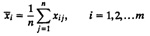

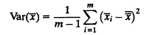
| Previous | Table of Contents | Next |
The method of moving averages of independent replications is similar to the initial data deletion. The key difference is that this method requires computing the mean over a moving time interval window instead of the overall mean.
Given m replications of size n each, again let xij denote the jth observation in the ith replication. The steps are as follows:
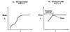
FIGURE 25.9 Moving average of independent replications.
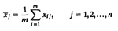
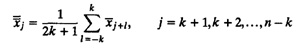
Figure 25.9 shows two sample trajectories of moving averages. In the second trajectory, the plot is smooth and the knee can be easily identified.
The method of batch means requires running a very long simulation and later dividing it up into several parts of equal duration. Each part is called a batch or subsample. The mean of observations in each batch is called the batch mean. The method requires studying the variance of these batch means as a function of the batch size.
As shown in Figure 25.10, a long run of N observations can be divided into m batches of size n each, where m = 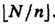 Here, [·] is used to denote truncation to the lower integer value. Start with a small value for n, say, 2. Again, let xij denote the jth observation in the ith batch.
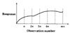
FIGURE 25.10 Transient removal by batch means requires dividing the data into m batches of size n each.
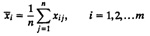
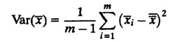
Increase n and repeat steps 1 and 3, for n = 3,4,5,.... Plot the variance as a function of batch size n. The length of the transient interval is the value of n at which the variance definitely starts decreasing.
The rationale behind this method is as follows. Suppose the length of the transient period is T. If the batch size n is much less than T, initial batches bring the overall mean toward the initial batch means and the variance is small. As the batch size is increased, the variance increases. At n larger than T, only the first batch mean is different; other batch means are approximately equal. This results in the decrease of the variance.
Note that in using this method, you should ignore those peaks on the variance curve that are followed by an upswing, as shown in Figure 25.11.
Although a majority of simulations are such that steady-state performance is of interest, there are systems that never reach a steady state. These systems always operate under transient conditions. For example, if the network traffic consists of the transfer of small files (one to three packets), steady-state simulations using large files will give results of no interest to a typical user. In such cases, it is necessary to study the system in a transient state. Such simulations are called terminating simulations. Other examples of terminating simulations are systems that shut down, for instance, at 5 PM every day, or systems that have parameters that change with time. Such simulations do not require transient removal.
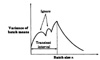
FIGURE 25.11 Transient removal by batch means.
Another related issue is that of final conditions—the conditions at the end of the simulation. The system state at the end of the simulation may not be typical of the steady state. In such cases, it is necessary to exclude the final portion of the response from the steady-state computations. The methods for this would be similar to those used for determining initial transient periods.
Finally, the analyst should be careful in handling the entities left at the end of the simulation. Consider the example of the CPU scheduling simulation. In computing mean service time, only those jobs that completed service must be included, that is,
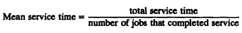
In computing mean waiting time, only those jobs that completed waiting and started execution should be used, that is,
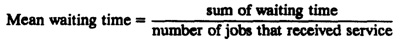
If qj’s is the queue length at the jth event that resulted in a queue length change, the average of qj’s does not give the mean queue length, that is,
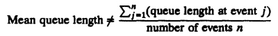
Instead, a time average of the queue length process should be used, that is,
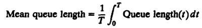
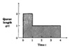
FIGURE 25.12 Mean queue length is time average of the queue length.
It is important that the length of the simulation be properly chosen. If the simulation is too short, the results may be highly variable. On the other hand, if the simulation is too long, computing resources and manpower may be unnecessarily wasted. From the discussion in Section 13.9 on determining the sample sizes, it follows that the simulation should be run until the confidence interval for the mean response narrows to a desired width. If the sample mean is 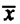 and its variance is Var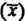, a 100(1 - α)% confidence interval for the mean is given by
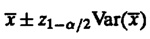
Recall that z1-α/2 is the (1 - α/2)th quantile of a unit normal variate. Its values are listed in Table A.2 of the Appendix.
The variance of the sample mean of n independent observations can be obtained easily from the variance of the observations as follows:
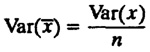
| Previous | Table of Contents | Next |
){kind=link}
){kind=link}
){kind=link}
){kind=link}